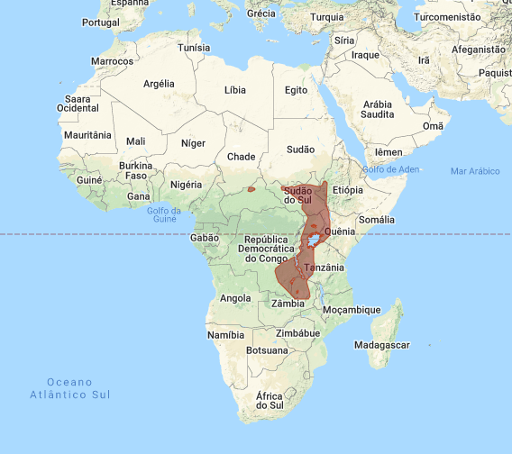
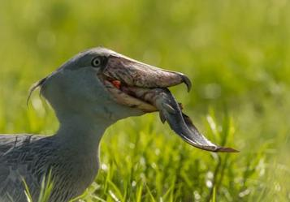

As aves são um grupo de vertebrados com uma diversidade impressionante, onde encontramos sem dúvida espécies que exibem belas características físicas, além dos variados cantos que muitos conseguem emitir. Dentro dos diferentes traços deste grupo de animais temos desde aves muito pequenas até algumas realmente impressionantes por sua altura e aspecto, sendo uma delas a conhecida como cegonha-bico-de-sapato, uma espécie que, sem dúvida, nos lembra a estreita relação entre esses emplumados voadores e os dinossauros. Elas também são chamadas de bico-de-tamanco.
A cegonha bico-de-sapato (Balaeniceps rex) é um animal realmente impressionante, fácil de identificar e muito curioso. Vejamos a seguir suas principais características físicas:
Agora que conhecemos as principais características da cegonha-bico-de-sapato e seus costumes, onde ela vive? O a cegonha bico-de-tamanco é uma ave nativa da África e se desenvolve no centro desta região, especificamente no Congo, Ruanda, Sudão, Tanzânia, Uganda e Zâmbia.
O habitat do bico-de-tamanco é composto por pântanos de inundações estacionais, mas pode se mover para outros ecossistemas para se reproduzir e procurar alimento. Geralmente, está presente em áreas onde predominam plantas como os papiros, por exemplo, a espécie Cyperus papyrus, juncos como o caso do Phragmites spp., e gramíneas, especialmente Miscanthidium spp. Se desenvolve também em lugares com abundante vegetação flutuante, pântanos permanentes e até em certas plantações, como as de arroz. No entanto, evita ecossistemas de vegetação muito densa ou que a altura seja superior ao próprio tamanho da ave.
A cegonha-bico-de-sapato é uma ave carnívora, que se alimenta principalmente de peixes, sendo um pulmonado o de sua preferência, como a espécie Protopterus aethiopicus, mas também inclui outras variedades, como por exemplo o Bichir de Senegal (Polypterus senegalus), bagres do gênero Clarias e peixes do grupo Tilapias. É comumente localizada em águas pouco oxigenadas, de modo que alguns peixes são obrigados a subir para a superfície para respirar e a ave aproveita para capturá-los.
Por outro lado, se alimenta também de roedores, anfíbios, pequenos crocodilos, tartarugas e serpentes aquáticas. Em algumas ocasiões pode incluir aves jovens e carniça. Para capturar a presa, pode se manter parada dentro da água e, uma vez que a detecte, ataca; também pode ir caminhando para vadear.
A União Internacional para a Conservação da Natureza (UICN) têm classificado a cegonha-bico-de-sapato na categoria de vulnerável. Suas principais ameaças constituem a transformação do habitat para o desenvolvimento da agricultura, pecuária ou exploração petrolífera; caça para seu consumo ou por crenças populares associadas ao que a ave é supostamente mau presságio e também para sua comercialização e venda para zoológicos.
De acordo com a UICN, há cerca de 3.300-5.300 cegonhas-bico-de-sapatos no mundo. A tendência populacional é decrescente, de modo que foram propostas certas ações para sua conservação. Além de estar incluída no apêndice II da Conservação sobre o Comércio Internacional de Espécies Ameaçadas da Fauna e Flora Silvestre, desenvolvem certos planos que envolvem as comunidades para a proteção deste animal.